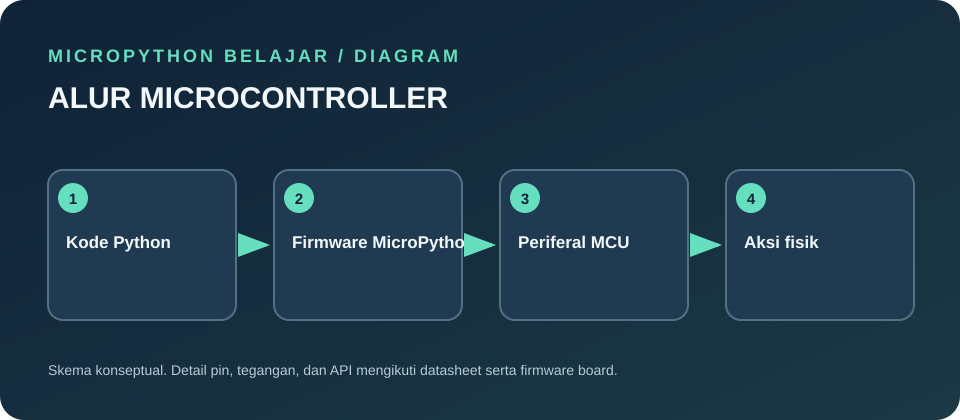

LEVEL DASAR · ARTIKEL 07
Dasar Python untuk MicroPython
Kamu tidak perlu menguasai seluruh Python desktop untuk memulai. Fokus pada konstruksi bahasa yang paling sering dipakai saat membaca sensor, mengolah nilai, dan mengendalikan perangkat.

Variabel dan tipe data
nama = "sensor suhu"
jumlah = 3
suhu = 28.5
aktif = True
print(nama, jumlah, suhu, aktif)Python menentukan tipe berdasarkan nilai yang diberikan. MicroPython mendukung tipe dasar seperti integer, float, string, boolean, list, tuple, dan dictionary. Namun, penggunaan memori tetap harus diperhatikan.
Operator dan percabangan
tegangan = 3.1
if tegangan > 3.0:
status = "normal"
else:
status = "periksa"
print(status)Perulangan
for nomor in range(3):
print("Percobaan", nomor)
hitung = 0
while hitung < 3:
print(hitung)
hitung += 1List, dictionary, dan fungsi
sensor = {"suhu": 28.5, "kelembapan": 70}
print(sensor["suhu"])
nilai = [24, 25, 26, 27]
print(sum(nilai) / len(nilai))
def celsius_ke_fahrenheit(c):
return (c * 9 / 5) + 32Penanganan kesalahan
try:
angka = int("123")
print(angka)
except ValueError:
print("Input bukan bilangan bulat")Latihan
- Buat list berisi lima pembacaan sensor dan hitung rata-ratanya.
- Buat fungsi untuk memberi status “dingin”, “normal”, atau “panas”.
- Gunakan dictionary untuk menyimpan nama perangkat dan statusnya.